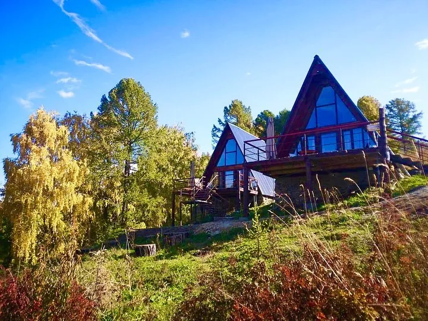
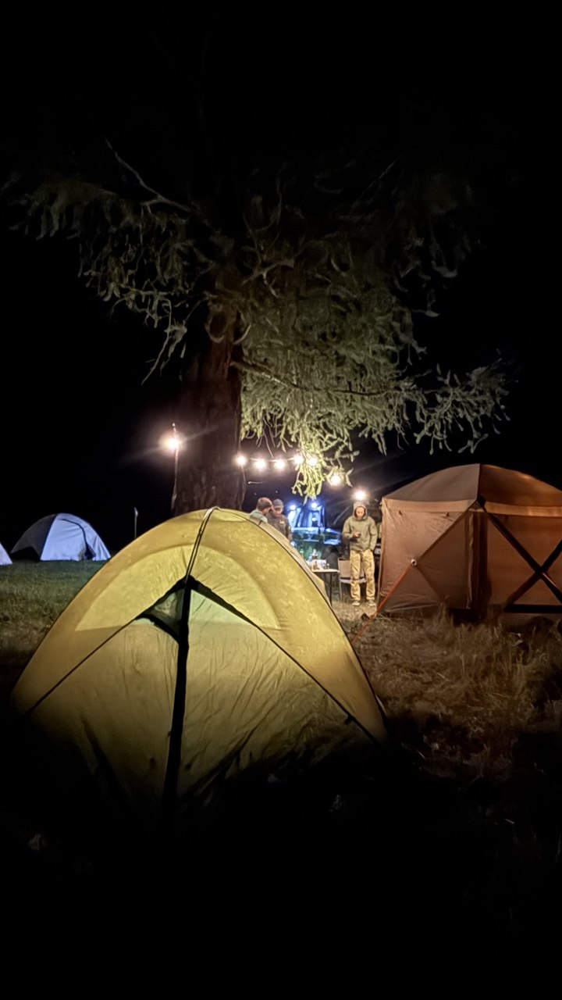
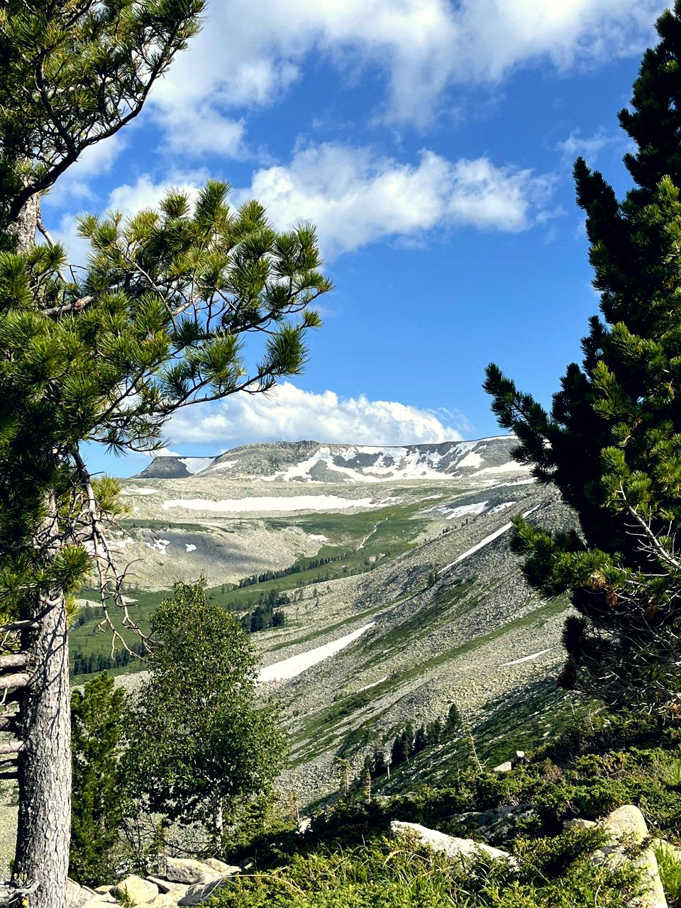
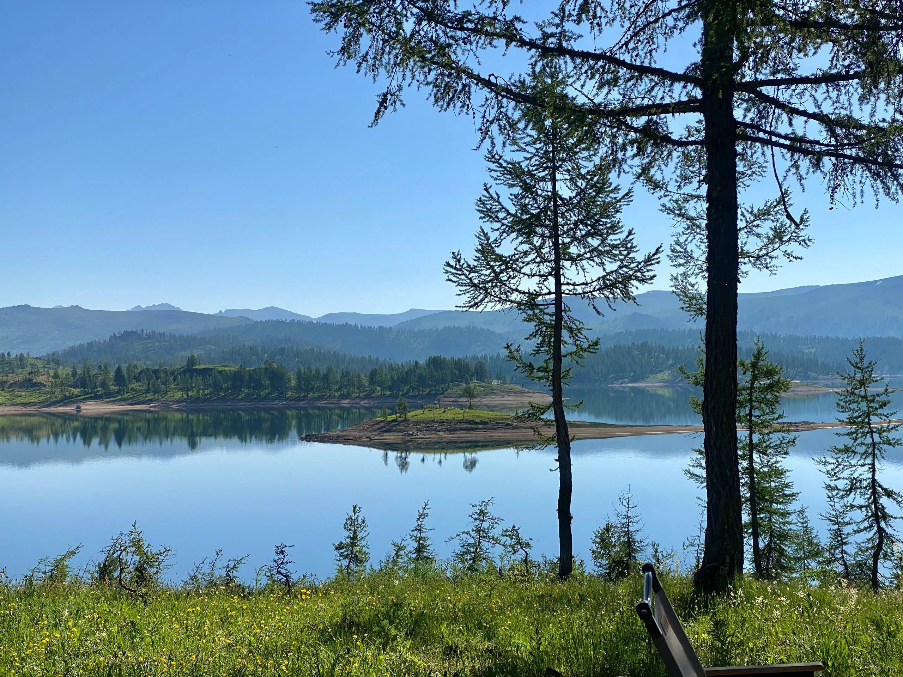
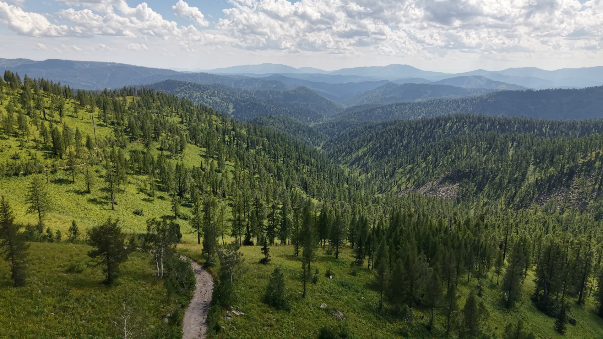

2027 年夏季开放预订
夏季
- 东哈萨克斯坦全境定制行程
- 卡通-卡拉盖、马尔卡科尔湖、亚泽沃耶湖
- 里德尔出发的山地越野一日游
- 垂钓、漂流、骑马与徒步
每次行程都是私人成团。告诉我们日期和您在意的事，我们会发来逐日行程和报价。
机场接机，驱车进入阿尔泰，途中停车拍照，入住村里的酒店。
上午骑马、参观马鹿养殖场，随后前往湖区。入住湖边木屋，体验桑拿。
湖上垂钓、桨板，然后前往温泉。乘船看瀑布，可自选氡泉浴。
徒步 3–4 小时，远眺别卢哈峰。晚上在别列利射箭、桑拿。
奥地利古道，约 6 小时山地土路。湖边篝火晚餐。
上午在马尔卡科尔湖，随后下到草原和黏土峡谷。晚上住斋桑。
清晨送往机场、口岸或您的下一站。
一次旅行走过雪山、湖泊、森林、温泉和荒漠。
在乌斯季卡缅诺戈尔斯克机场、火车站或迈卡普恰盖口岸（对面为中国吉木乃口岸）接您。行程结束后送回原处、口岸或其他城市。
每晚的酒店和民宿由我们预订。没有住处的地方，我们搭建自己的营地：帐篷、厨房和装备都由我们提供。
丰田陆地巡洋舰、日产途乐和坦克越野车，均为山路改装。司机就是每个季节都跑这些线路的向导，可安排英语向导。每车最多 4 位客人。
每天的餐食都写在行程里。沿途可加入垂钓、骑马、桨板、徒步和桑拿。
国家公园门票和边境地区通行证由我们办理。您只需提供护照复印件——预订后请尽快发给我们。
没有信号的地方配有 Starlink 和 Thuraya 卫星电话。如果天气封闭山口，向导有备用线路。
只需要其中一部分？酒店、接送、向导和通行证也可以单独安排，配合您自己的东哈萨克斯坦行程。
我们带客人住过的酒店和营地。在没有住处的荒野，我们住自己的营地。






通过邮件、WhatsApp 或下方表单联系。工作时间内（UTC+5，比北京时间晚 3 小时）一小时内回复。
我们发来包含住宿、餐食和明确报价的行程，并根据您的团队调整。
定金用于锁定日期和住宿。中国游客可通过微信扫码付款至公司账户。
我们接到您，全程陪同直到您离开。







Asferia Adventure 是位于东哈萨克斯坦里德尔市的持牌旅行社。自 2023 年起，我们带客人进入阿尔泰山：湖泊、山口、瀑布和本地区的国家公园。
我们安排整个行程：向导、改装越野车、合作住宿、机场接送和通行证。一次预订，一个联系人。
一日游的午餐由里德尔的 Krem 咖啡馆提供，已包含在价格内。

中哈两国已互免签证，中国公民持普通护照可免签入境，单次停留不超过 30 天。政策可能调整，出行前请以官方最新信息为准。
可先飞阿拉木图或阿斯塔纳，再转国内航班到乌斯季卡缅诺戈尔斯克（厄斯克门，机场代码 UKK），我们在机场接机。从新疆走陆路的客人，可经吉木乃口岸入境，我们在哈方迈卡普恰盖口岸接您，行程可从斋桑开始。
夏季为 5 月底至 10 月，高山地区 6 月中旬至 9 月中旬完全开放。冬季项目（雪地履带车、雪地摩托观光）为 12 月至次年 3 月。
卡通-卡拉盖国家公园位于边境地区，外国游客需要边境地区通行证。由我们代为申请，通常需要 2–4 周，请尽早确定日期。
把日期和人数发给我们，我们回复逐日行程和报价，支付定金后日期即确认。可通过微信扫码付款至我们公司的银行终端账户。
告诉我们计划出行的时间和您在意的事。工作时间内一小时回复，并发来逐日行程和报价。
“发邮件或留言给我们，工作时间内一小时回复。”